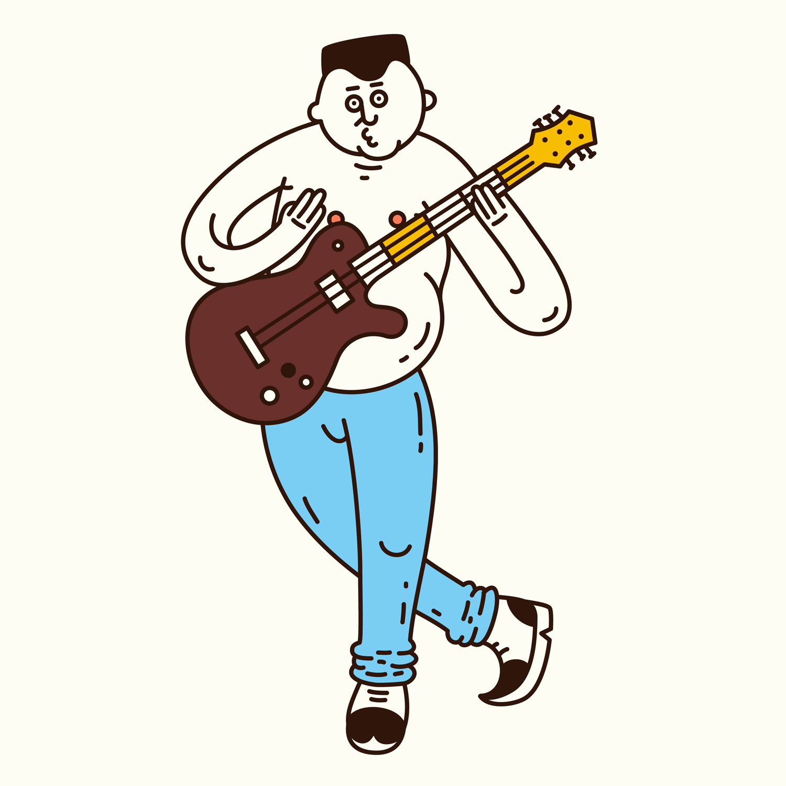

Me considero un aficionado del futbol, normalmente estoy al tanto de varias competencias al rededor del mundo incluyendo la mexicana, la brasileña, la champions league europea, la premier inglesa, la serie A italiana y laliga española. Los fines de semana normalmente hay partidos de liga y entre semana normalmente juegan los partidos de la champions. Tambien me gusta dominar el balon en el jardin de mi casa durante la pandemia y entrenar o hechar una cascara en tiempos normales.
Una de mis pasiones es tocar guitarra. Trato e practicar todos los dias, especialmente cuando no tengo tarea por hacer. Durante los fines de semana normalmente tengo el tiempo para aprenderme una nueva canción. Horita estoy aprendiendome la canción de "Stairway to Heaven" de Led Zeppelin. A veces hasta toco en la tarde para arrucarme antes de tomar una siesta.
Si no lo tienes que usar, no lo uses
Se tiene que tener cuidado que el fondo no cause que el contenido de la pagina sea dificil de leer porque, con colores o figuras raras, la pagina no comunicara la informacion muy bien
Porcentaje porque de esa manera el sitio escala mas facil a monitores, celulares y tabletas
Hace que el sitio se mueva mas rapido, reduciendo "load times", "bandwidth usage" y mejorando la accecibilidad del sitio